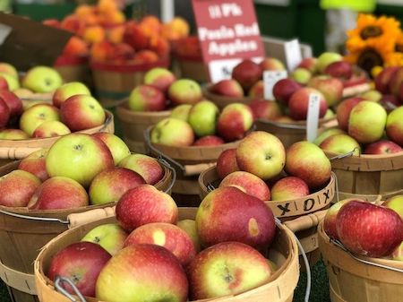
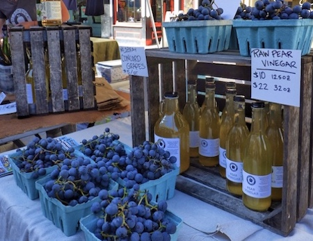
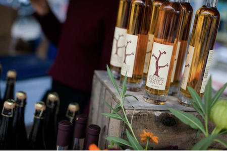
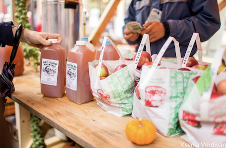
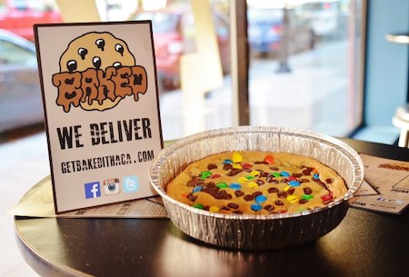
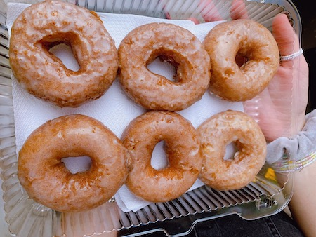
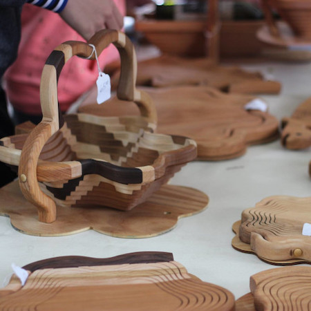
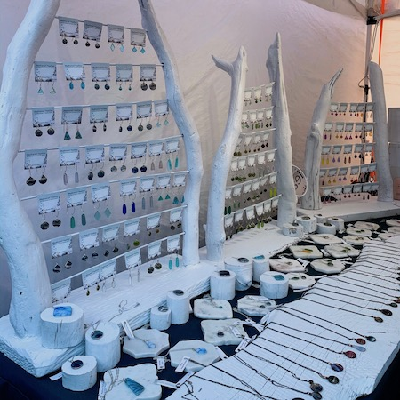

With over 100 vendors present at the festival, there are many opportunities to be introduced to the rich artisan and culinary community in Ithaca. Our food vendors feature apple-centric and other fall classics for you to taste, and the craft vendors offer homemade goods like soaps, jewelry, sculptures, clothing, and more! This is the perfect place to learn about and support Ithaca's small businesses that encompass the heart of the town.
Farm Fresh Apples & Produce


Here is a list of some of the farms and produce vendors you can expect to see at the event:
Schweigarts Sugar Shack
Schoolyard Sugarbush
A J Teeterfarm
Littletree Orchards
Creamcycle
Maple River Syrup Company
MacDonald Farms
Cornell Society of Horticulture
Laughing Goat Fiber Farm
Robbie’s Produce
Picaflor Farm
Little Farm Bakery
Little Grey Bakery
Mojo Hot Sauce
Wineries and Cider Houses


Here is a list of some of the wineries and cider houses you can expect to see at the event:
Blackduck Cidery
Redbyrd Orchard
South Hill Cider
New Leaf Cider Co.
Thousand Islands Winery
Finger Lakes Cider House
New York Cider Company
Eve's Cidery
Ashley Lynn Winery
Food Vendors


Here is a list of some of the restaurants and food vendors you can expect to see at the event:
Macarollin
Mr. Squeeze Lemonade
Kettle Corn Shoppe
SPM Empanadas
Fittnell Barbeque
Tibetan Momo Bar
Travelers Kitchen
Asempe Kitchen
Vail Bros inc
On The Street Pitas
Silo Food Truck
B&B Kettle Korn
Robbie’s Produce
PDRS Catering
Trini Style
Coltivare
She Messy Tacos
Adam Grill
Thai Basil
Zocalo
Yxi's Arepas & Gordito
Solaz
Monks on the Commons
Smash Bros World Foods
The Yellow Deli
Thai Palace
Lou's Covert Kitchen
Crafters


Here is a list of some of the crafters you can expect to see at the event:
A&K Creations
Alchemist's Whim
All Forked Up Art
Anna Pausch Studios
Art Of Yen Ospina
Ashley Messana Jewelry
Bags That Bite
Black Rabbit Studio
Bon Fire Craft
CHOP SHOP STORE
Crescent Moon studio
Daisy Hollow Farm
Dale Bowers Art
Dan Bingham Art
Dave’s Art Den
Dear Elaan jewelry
DMK Naturals
dna jewelry designs
FIRST-N-TEN
For Claudia’s sayke
Goldenhandsdesign
Hooked Productions
Interstellar Love Craft
Jake’s Jammin Bow Ties
Jazz House Designs
Julie Draws
Knittin Caboodle
Kom Life
Lakeland Winery
MV CERAMICS
Natalie Rae NY
Pair'adox Dice
... and many more! Please head over to the market to see all of our offerings this year.